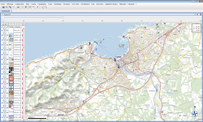
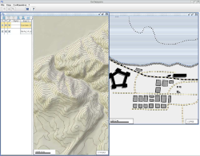
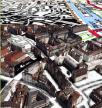
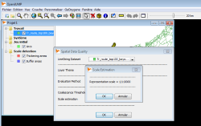
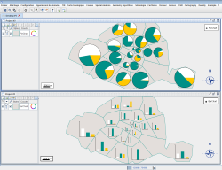
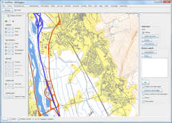
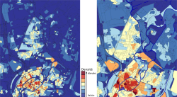
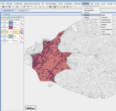
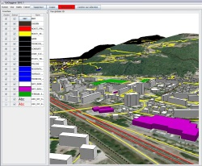

Introduction
GeOxygene aims at providing an open framework which implements OGC / ISO specifications for the development and deployment of geographic (GIS) applications. It is a open source contribution of the COGIT laboratory at the IGN (Institut Géographique National), the French National Mapping Agency.
GeOxygene is based on Java and open source technologies and provides users with an extensible object data model (geographic features, geometry, topology and metadata) which implements OGC specifications and ISO standards in the geographic information domain. The support of the Java interfaces developped by the open source GeoAPI project is planned.
GeOxygene is an open source project made available to you using an open source license described here.
Démo
News
October 19, 2015 - Version 1.7 released
Among the novelties :
- Students works : dot density analysis, measures of complexity of map.
- Minkowski 2D operations (sum between two polygons A and B, subtraction of A and B with reference to the center of mass B, etc.)
- Generic algorithms (linear and nonlinear) of the least squares estimator
- Polygons squaring by least squares compensation
- A “lenses” plugin that can : show a more detailed view over a less detailed layer, view a portion of the raster layer over the vector one, etc.
- OpenGL rendered 2D GUI added.
- Probably last version using java 7
October 1, 2015 - Mapstyle demonstration
Two demonstrations of using GeOxygene library at the GeoVIS Workshop, ISPRS GeoSpatial Week. Watch the video above !
June 5, 2014 - CartAGen demonstration
CartAGen is a component-based research platform dedicated to generalisation. It based on GeOxygene library. A demonstration entitled Multi-Agent Multi-Level Cartographic Generalisation in CartAGen will be held at PAAMS‘14
February 26, 2014 - A presentation tools to estimate imprecision on geographical data
Jean-François Girres intervention at Géoséminaire entitled Fondements théoriques et méthodologiques de la qualification des données géographiques showcased tools developed in his thesis to estimate geometric measurements imprecision on geographical data.
January, 2014 - Version 1.6 released
This new version includes the EstIM model developed during the Jean-François Girres PhD (2012), a new OSM module, new tools for managing style (editor, import and export SLD). The old GeOxygene 2D graphical interface and CartaGen graphical interface merge.
June 10, 2013 - What’s New in GeOxygene 1.5
The presentation on GeOxygene 1.5 at FROG 2013 in Saint-Mandé will focus on the new features, including a description of the three new modules : geoxygene-semio (semiology), geoxygene-sig3d (3D) and geoxygene-cartagen (generalization).
Presentation Slides : “GeOxygene : une plate-forme de recherche pour le développement d’applications SIG”
January, 2013 - Version 1.5 released
This new version includes :
- a new semiology module with a model of legend detailed here.
- a new 3D module provides a dedicated GUI mapping tool that is optimized to manipulate 3D geometry, to import special format like CityGML, postgis 3D, ..., to use objects and algorithms dedicated to 3D
- a new generalization module provides generalization algorithms, spatial analysis api (Multi-criteria decision analysis, ...), methods for calculating compactness, curves, congestion
- data matching process using theory of Evidence
Technically, the project has adopted a new multi-module Maven architecture.
Screenshots

|

|

|

|

|

|

|

|

|